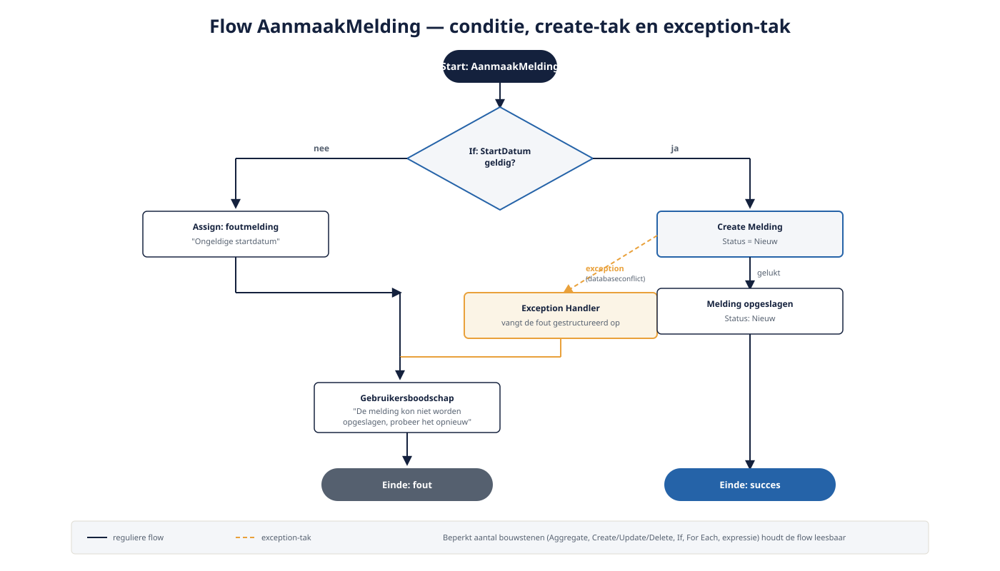
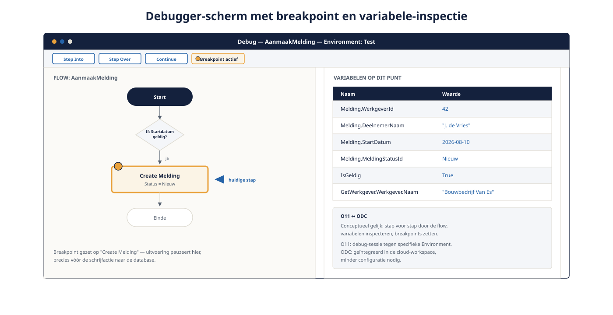

Deel 4 — Logica
Slidedeck · Ductus-cursus OutSystems · Niveau 1 — Fundament · deel 4 van 30 · 13 slides
Slide 1 — Title: OutSystems: Fundament
OutSystems: Fundament
Deel 4 — Logica
Slide 2 — Bullets: Server actions: waar bedrijfslogica woont
Server actions: waar bedrijfslogica woont
- Visuele flow, server-side uitgevoerd
- Beperkt aantal bouwstenen: Aggregate, Create/Update/Delete, If, For Each, expressie
- Klein aantal bouwstenen = leesbaar voor iedereen

Slide 3 — Section: Server versus client
Server versus client
Slide 4 — Bullets: De vuistregel
De vuistregel
- Server action: databasetoegang, serverzijdige regels
- Client action: directe feedback, geen serverdata nodig
- Alles wat vóór het versturen van het formulier moet: client
- Alles daarna: server
Slide 5 — Opdracht: Opdracht 4.1 — Server of client action?
Opdracht 4.1 — Server of client action?
Drie stukken logica van Verzuimmeldingen.
→ Werkboek 4.1
(let op vraag c — niet zo eenvoudig als het lijkt)
Slide 6 — Section: Exceptions en foutafhandeling
Exceptions en foutafhandeling
Slide 7 — Bullets: Exception Handler
Exception Handler
- Vangt een fout gestructureerd op
- Technische fout ≠ gebruikersboodschap
- Jij bepaalt wat de eindgebruiker ziet
Slide 8 — Opdracht: Baan A / Baan B
Baan A / Baan B
A — AanmaakMelding bouwen + debuggen in Service Studio
B — AanmaakMelding bouwen + debuggen in ODC Studio
→ Werkboek, eigen baan
Slide 9 — Section: De debugger
De debugger
Slide 10 — Bullets: Stap voor stap door de flow
Stap voor stap door de flow
- Breakpoints zetten
- Variabelen inspecteren op elk punt
- O11: sessie tegen een specifieke Environment
- ODC: geïntegreerd in de cloud-workspace, minder configuratie

Slide 11 — Opdracht: Reflectieopdracht 4.2
Reflectieopdracht 4.2
Waarom een gebruiksvriendelijke boodschap in plaats van de technische fout?
→ Werkboek 4.2
Slide 12 — Bullets: Kernpunten deel 4
Kernpunten deel 4
- Server actions: bedrijfslogica; client actions: directe feedback
- Beperkt aantal bouwstenen houdt flows leesbaar
- Exception Handlers: technische fout scheiden van gebruikersboodschap
- Debugger: conceptueel gelijk, ODC vereist minder opstartconfiguratie
Slide 13 — Section: Volgende deel: Interface en screen lifecycle
Volgende deel: Interface en screen lifecycle